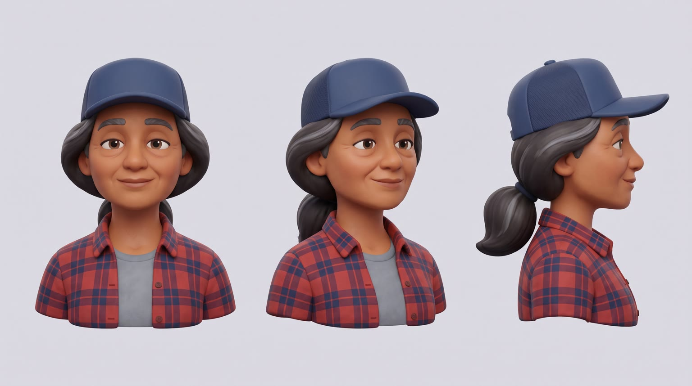
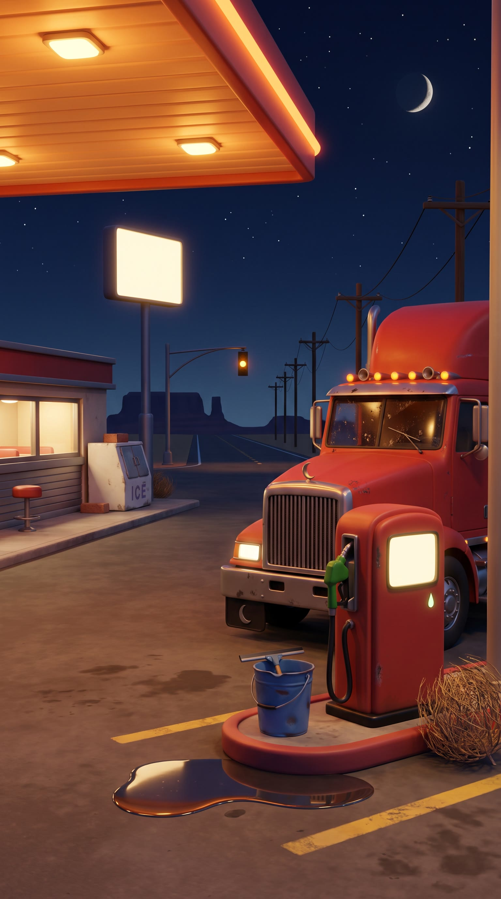
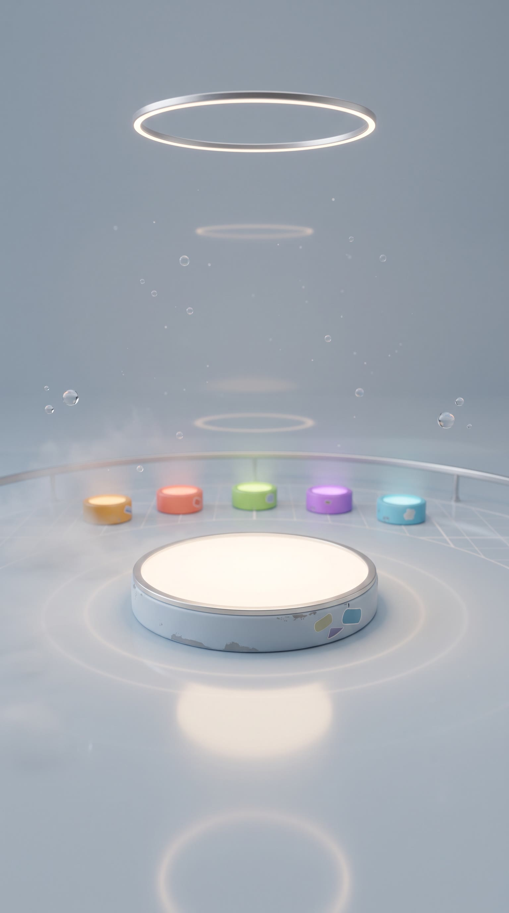
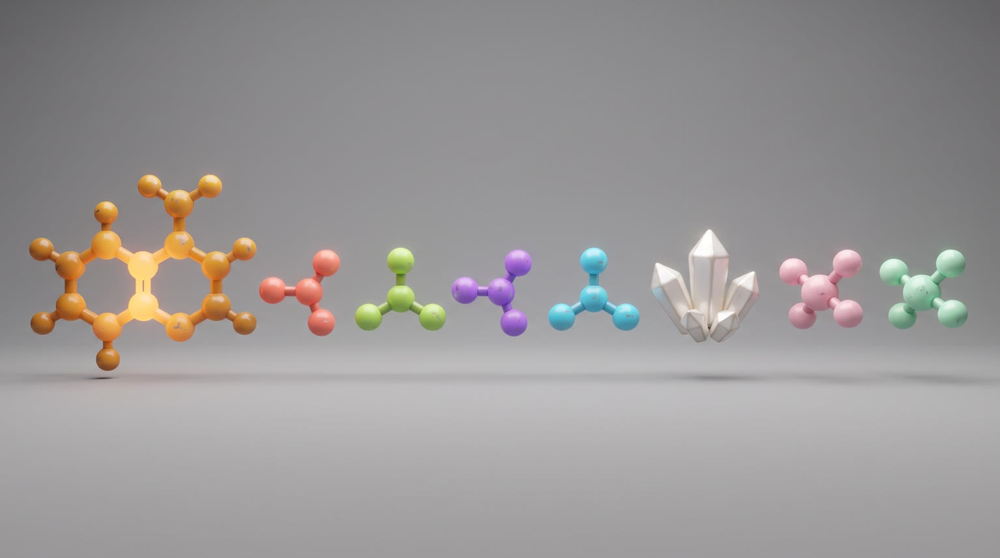
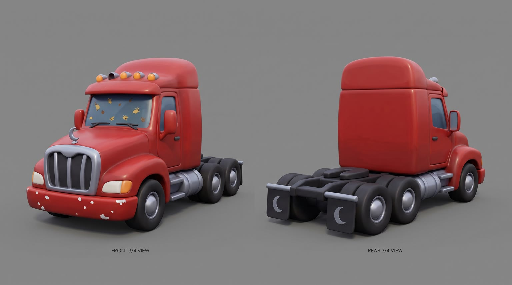

All templates · template.json · original storyboard
3D how it's made explainer (Zack D. Films style)how_its_made-01-whats-insideWhat's Inside
2am at a truck stop, a long-haul driver reaches for {{product.name}}. The camera dives inside it to show, part by part, exactly what the product page says is in there, and nothing it does not.
Fit by product type
| ingested | great | ingredient lists are the classic dive: each named ingredient becomes a glowing model |
| applied | great | named actives in a cream, serum or balm float out of the formula |
| worn | good | works when the page names materials or layers (knit, foam, membrane, sole); weak if the page only says 'premium fabric' |
| handheld | great | an exploded view of the parts or specs the page names (battery, lens, chip, casing) |
| carried | good | named fabrics, frame, lining and compartments go translucent |
| home | stretch | Rosa uses it in the sleeper berth of her cab, so only pillows, blankets, lamps and small appliances fit; large furniture cannot be in the cab |
| consumable | good | the refill or pack is opened and its named contents explained |
Refuses: products whose page names fewer than 2 components; products for children; alcohol; medicines, supplements or anything whose components would need medical or health claims; anything unsafe to use right before driving (sleep aids, sedatives); large furniture and large appliances
Cast, world and props (shipped with the template)





- Rosa Delgado has driven for 22 years. Since her husband Manny died in 2021 she runs Delgado Freight alone, one truck out of El Paso, and the red cab is the same 2009 rig he bought used.
- Tonight she is hauling a reefer trailer of avocados from Laredo to Kansas City, 940 miles, due on the dock at 7am. At Mile 212 she is nine hours into an eleven hour driving limit.
- Mile 212 Stop is a 1968 fuel island with a six stool diner. The owner, Walt, has not turned the canopy lights off since the night of the 1996 blizzard, so drivers call it the lighthouse.
- The inside of the product is imagined as a calm lab: one glowing platform for the product, and a far arc of four small pedestals, one per component glow colour (amber, coral, pearl white, mint), waiting to be lit as each component is shown.
- Only what the product page names gets a pedestal. Anything the page does not state stays dark and is never shown or explained.
Script: what each line must do
Right column is the worked example for Red Bull Sugarfree.
| Time | Speaker | Intent (template) | Example |
|---|---|---|---|
| 0.2-2.9 | narrator (off camera) | Hook: one surprising true fact from the product page that makes the viewer ask 'wait, how?'. If left_out exists, pair how the product looks, feels or tastes with the thing it is free of. the fact must be stated on the product page; left_out only if the page says it word for word Max 10 words. Delivery: fast, curious, friendly, a little conspiratorial | This tastes sweet. But there's no sugar in it. |
| 3.4-5.6 | narrator (off camera) | Fixed: So what's actually in there? Let's go inside. Max 8 words. Delivery: quick, playful, lifting on 'inside' | So what's actually in there? Let's go inside. |
| 8.6-11.4 | narrator (off camera) | Component 1: 'First,' then its name, then its stated_function if the page gives one (else its stated amount, or nothing more). name as written on the page; function only from stated_function, reworded no further than person and tense; nothing unstated (see product_extract.nothing_unstated) Max 10 words. Delivery: clear, a beat on the component name | First, caffeine. It helps improve concentration and alertness. |
| 11.7-15.3 | narrator (off camera) | Component 2: 'Then' plus its name (a group may list its members as the page lists them), then its stated_function if the page gives one. same as L3; spell hard names phonetically in the TTS script Max 12 words. Delivery: rapid list if it is a group, ticking each one, then slower on the function | Then B vitamins: niacin, B2, B6, B12. They help reduce tiredness. |
| 15.6-17.4 | narrator (off camera) | Component 3: 'Plus' and its name, with its stated amount or stated_function if the page gives one; if the page gives neither, the name alone. same as L3; with only 2 components follow product_extract.components.mapping Max 8 words. Delivery: matter of fact, quick | Plus a thousand milligrams of taurine. |
| 17.8-21.4 | narrator (off camera) | Component 4, and pay off the hook: if left_out exists, name what the page uses instead and end on 'Not <left_out>.'; otherwise name component 4 with its stated function. same as L3; left_out wording from its page_quote only Max 10 words. Delivery: the reveal, a small grin, punch on the last two words | And the sweet? Sucralose and acesulfame K. Not sugar. |
| 22.0-24.8 | narrator (off camera) | Product line: say {{product.name}} and its one point of difference from product.benefits. benefit only from product.benefits, reworded no further than person and tense; brand spelled with product.phonetic in the TTS script Max 9 words. Delivery: warm and certain, slower than the rest | Red Bull Sugarfree. Same benefits, without sugar. |
| 27.7-29.6 | narrator (off camera) | Tagline: product.tagline if the page has one, otherwise a 3 to 5 word line about knowing exactly what is inside. Max 6 words. Delivery: smiling, a little stretched | Wiiings without sugar. |
Product-adjacent props by type
| ingested | the cup holder of the cab beside her taped travel mug, where the product rides |
| applied | the dashboard tray beside her reading glasses, where the product rides |
| worn | the passenger seat of the cab, where the product lies folded or set out |
| handheld | the dashboard tray, where the product rides beside her reading glasses |
| carried | the passenger seat of the cab, where the product sits |
| home | the small sleeper berth behind the cab seats, where the product is set up among her flattened navy cushion and a folded blanket |
| consumable | the door pocket of the cab, where a pack of the product rides |
Shots and how the product appears for each type
S01 · 0 to 3.0 s · reveal
The product stands in the void cut cleanly away along one side, its inside glowing; if the page names something the product is free of, a big stylized version of it tumbles in and bounces off an invisible glass wall.
| ingested | {{product.visual}} standing upright on the glowing platform, rendered realistic with its front label to camera and undistorted, a clean vertical slice removed from its right side so its real contents glow softly behind a clear glass-like wall |
| applied | {{product.visual}} standing upright on the glowing platform, rendered realistic with its label to camera, its right side sliced cleanly away so the formula inside glows softly behind a clear glass-like wall |
| worn | {{product.visual}} floating upright just above the glowing platform as if on an invisible form, its best side to camera, one clean section on its right side peeled back to show its inner layers stacked like a cross-section |
| handheld | {{product.visual}} standing upright on the glowing platform, logo to camera, its right side cut away in a clean x-ray section so its inner parts show in a soft glow |
| carried | {{product.visual}} standing on the glowing platform, logo to camera, its right side panel turned clear like glass so its compartments and inner structure show |
| home | {{product.visual}} on a wider glowing platform scaled to its size, its best side to camera, one clean section on its right cut away to show its inner construction in a soft glow |
| consumable | a single {{product.visual}} standing upright on the glowing platform, label to camera, its right side sliced cleanly away so its contents show behind a clear glass-like wall |
S02 · 3.0 to 5.8 s · in_use
2am in the cab at the truck stop: Rosa, cap on, uses the product in the driver's seat; the canopy light glows through the windshield.
| ingested | opening {{product.visual}} at chest height with the label facing camera and undistorted, about to have some, a small puff of mist or aroma curling from the opening |
| applied | squeezing a little of {{product.visual}} onto the back of one hand at chest height, the label facing camera and undistorted |
| worn | pulling on or adjusting {{product.visual}} in the driver's seat, its details catching the orange canopy light |
| handheld | holding {{product.visual}} at chest height and switching it on or putting it to use, logo facing camera and undistorted |
| carried | opening {{product.visual}} on her lap in the driver's seat, logo facing camera and undistorted |
| home | turned in her seat toward the small sleeper berth behind the seats, one hand switching on or settling {{product.visual}}, which is set up there among a flattened navy cushion and a folded blanket |
| consumable | taking one {{product.visual}} from its pack at chest height, the label facing camera and undistorted |
S03 · 5.8 to 8.4 s · reveal
The camera rushes into the product; its surface turns translucent like glass and the world opens into its glowing inside.
| ingested | extreme close-up top-down on the opening of {{product.visual}}, the opening large in the centre of frame, its walls turning translucent like frosted glass so its glowing contents are visible inside, a sense of the camera about to fly in |
| applied | extreme close-up on the cap, pump or nozzle opening of {{product.visual}}, large in the centre of frame, the container walls turning translucent like frosted glass so the glowing formula shows inside, a sense of the camera about to fly in |
| worn | extreme close-up on the surface of {{product.visual}}, its weave, grain or stitching filling the frame and turning translucent so its inner layers glow beneath, a sense of the camera about to fly in |
| handheld | extreme close-up on a seam, port or button of {{product.visual}}, its shell turning translucent like frosted glass so its glowing inner parts show beneath, a sense of the camera about to fly in |
| carried | extreme close-up on the zip, clasp or opening of {{product.visual}}, the outer fabric or shell turning translucent so its glowing inner structure shows beneath, a sense of the camera about to fly in |
| home | extreme close-up on the surface of {{product.visual}}, its outer layer turning translucent like frosted glass so its glowing inner construction shows beneath, a sense of the camera about to fly in |
| consumable | extreme close-up top-down on the opened pack of {{product.visual}}, the wrapper turning translucent so its glowing contents show inside, a sense of the camera about to fly in |
S04 · 8.4 to 11.6 s · background
Inside the product: the first page-named component spins into the centre and glows amber; empty space around it for the post label.
| ingested | inside the product's own contents, imagined as a softly glowing space tinted the real colour of what is inside (a glowing liquid if it is liquid, a warm crumbly glow if it is solid, soft bubbles only if the page says it is sparkling): [[component.1.visual]] spins into the centre of the frame and glows warm amber, with lots of empty space above and below it |
| applied | inside the formula, imagined as a soft pearly translucent medium with slow swirls: [[component.1.visual]] spins into the centre of the frame and glows warm amber, with lots of empty space above and below it |
| worn | inside the product's material, its layers imagined as huge soft translucent sheets of its real weave or grain drifting apart in the pale grey-blue void: [[component.1.visual]] spins into the centre of the frame and glows warm amber, with lots of empty space above and below it |
| handheld | inside the product, its shell opened into a clean floating exploded view in the pale grey-blue void, the other parts soft and out of focus: [[component.1.visual]] spins into the centre of the frame and glows warm amber, with lots of empty space above and below it |
| carried | inside the product, its walls turned to frosted glass around a calm pale grey-blue space, its real lining colour glowing faintly: [[component.1.visual]] spins into the centre of the frame and glows warm amber, with lots of empty space above and below it |
| home | inside the product, its outer surface turned to frosted glass around a calm pale grey-blue space, its inner construction faint in the background: [[component.1.visual]] spins into the centre of the frame and glows warm amber, with lots of empty space above and below it |
| consumable | inside the pack, its contents lifted gently out into the pale grey-blue void: [[component.1.visual]] spins into the centre of the frame and glows warm amber, with lots of empty space above and below it |
S05 · 11.6 to 15.4 s · background
The second page-named component pops in with a coral glow (a group arrives one by one and orbits in a ring).
| ingested | inside the product's own contents, imagined as a softly glowing space tinted the real colour of what is inside (a glowing liquid if it is liquid, a warm crumbly glow if it is solid, soft bubbles only if the page says it is sparkling): [[component.2.visual]] pops into the centre of the frame with a soft coral glow (a group of parts arrives one after another and orbits in an evenly spaced ring in coral, lime, violet and cyan), with empty space around it |
| applied | inside the formula, imagined as a soft pearly translucent medium with slow swirls: [[component.2.visual]] pops into the centre of the frame with a soft coral glow (a group of parts arrives one after another and orbits in an evenly spaced ring in coral, lime, violet and cyan), with empty space around it |
| worn | inside the product's material, its layers imagined as huge soft translucent sheets of its real weave or grain drifting apart in the pale grey-blue void: [[component.2.visual]] pops into the centre of the frame with a soft coral glow (a group of parts arrives one after another and orbits in an evenly spaced ring in coral, lime, violet and cyan), with empty space around it |
| handheld | inside the product, its shell opened into a clean floating exploded view in the pale grey-blue void, the other parts soft and out of focus: [[component.2.visual]] pops into the centre of the frame with a soft coral glow (a group of parts arrives one after another and orbits in an evenly spaced ring in coral, lime, violet and cyan), with empty space around it |
| carried | inside the product, its walls turned to frosted glass around a calm pale grey-blue space, its real lining colour glowing faintly: [[component.2.visual]] pops into the centre of the frame with a soft coral glow (a group of parts arrives one after another and orbits in an evenly spaced ring in coral, lime, violet and cyan), with empty space around it |
| home | inside the product, its outer surface turned to frosted glass around a calm pale grey-blue space, its inner construction faint in the background: [[component.2.visual]] pops into the centre of the frame with a soft coral glow (a group of parts arrives one after another and orbits in an evenly spaced ring in coral, lime, violet and cyan), with empty space around it |
| consumable | inside the pack, its contents lifted gently out into the pale grey-blue void: [[component.2.visual]] pops into the centre of the frame with a soft coral glow (a group of parts arrives one after another and orbits in an evenly spaced ring in coral, lime, violet and cyan), with empty space around it |
S06 · 15.4 to 17.6 s · background
The third page-named component drifts in with a pearl white glow and turns slowly.
| ingested | inside the product's own contents, imagined as a softly glowing space tinted the real colour of what is inside (a glowing liquid if it is liquid, a warm crumbly glow if it is solid, soft bubbles only if the page says it is sparkling): [[component.3.visual]] drifts into the centre of the frame with a pearl white glow, turning slowly, with empty space around it |
| applied | inside the formula, imagined as a soft pearly translucent medium with slow swirls: [[component.3.visual]] drifts into the centre of the frame with a pearl white glow, turning slowly, with empty space around it |
| worn | inside the product's material, its layers imagined as huge soft translucent sheets of its real weave or grain drifting apart in the pale grey-blue void: [[component.3.visual]] drifts into the centre of the frame with a pearl white glow, turning slowly, with empty space around it |
| handheld | inside the product, its shell opened into a clean floating exploded view in the pale grey-blue void, the other parts soft and out of focus: [[component.3.visual]] drifts into the centre of the frame with a pearl white glow, turning slowly, with empty space around it |
| carried | inside the product, its walls turned to frosted glass around a calm pale grey-blue space, its real lining colour glowing faintly: [[component.3.visual]] drifts into the centre of the frame with a pearl white glow, turning slowly, with empty space around it |
| home | inside the product, its outer surface turned to frosted glass around a calm pale grey-blue space, its inner construction faint in the background: [[component.3.visual]] drifts into the centre of the frame with a pearl white glow, turning slowly, with empty space around it |
| consumable | inside the pack, its contents lifted gently out into the pale grey-blue void: [[component.3.visual]] drifts into the centre of the frame with a pearl white glow, turning slowly, with empty space around it |
S07 · 17.6 to 21.6 s · background
The fourth page-named component glows pink and mint beside the product's clear inner wall; if there is a left-out prop, it is pressed against the outside of the glass, shut out.
| ingested | inside the product's own contents, imagined as a softly glowing space tinted the real colour of what is inside (a glowing liquid if it is liquid, a warm crumbly glow if it is solid, soft bubbles only if the page says it is sparkling): [[component.4.visual]] in the centre, glowing soft pink and mint; to the right the curved clear glass-like inner wall of the product, [[S07.gag]] |
| applied | inside the formula, imagined as a soft pearly translucent medium with slow swirls: [[component.4.visual]] in the centre, glowing soft pink and mint; to the right the curved clear glass-like inner wall of the container, [[S07.gag]] |
| worn | inside the product's material, its layers imagined as huge soft translucent sheets of its real weave or grain drifting apart in the pale grey-blue void: [[component.4.visual]] in the centre, glowing soft pink and mint; to the right a clear glass-like pane standing for the product's outer layer, [[S07.gag]] |
| handheld | inside the product, its shell opened into a clean floating exploded view in the pale grey-blue void, the other parts soft and out of focus: [[component.4.visual]] in the centre, glowing soft pink and mint; to the right the clear glass-like edge of the product's opened shell, [[S07.gag]] |
| carried | inside the product, its walls turned to frosted glass around a calm pale grey-blue space, its real lining colour glowing faintly: [[component.4.visual]] in the centre, glowing soft pink and mint; to the right the frosted glass wall of the product, [[S07.gag]] |
| home | inside the product, its outer surface turned to frosted glass around a calm pale grey-blue space, its inner construction faint in the background: [[component.4.visual]] in the centre, glowing soft pink and mint; to the right the frosted glass outer surface of the product, [[S07.gag]] |
| consumable | inside the pack, its contents lifted gently out into the pale grey-blue void: [[component.4.visual]] in the centre, glowing soft pink and mint; to the right the clear glass-like wall of the opened pack, [[S07.gag]] |
S08 · 21.6 to 25.0 s · hero
The camera flies back out; the product rebuilds itself from its x-ray state into its solid, exact form on the platform, label to camera.
| ingested | {{product.visual}} reassembled into its complete realistic form, standing upright on the softly glowing platform, label square to camera and perfectly undistorted, faint fading x-ray glow lines around its edges as if it just rebuilt itself, a few cold droplets on it |
| applied | {{product.visual}} reassembled into its complete realistic form, standing upright on the softly glowing platform, label square to camera and perfectly undistorted, faint fading x-ray glow lines around its edges |
| worn | {{product.visual}} reassembled into its complete realistic form, floating upright just above the softly glowing platform as if on an invisible form, its best side square to camera, faint fading x-ray glow lines around its edges |
| handheld | {{product.visual}} reassembled into its complete realistic form, standing upright on the softly glowing platform, logo square to camera, its exploded parts just clicked back into place, faint fading x-ray glow lines around its edges |
| carried | {{product.visual}} reassembled into its complete realistic form, standing on the softly glowing platform, logo square to camera, its walls solid again, faint fading x-ray glow lines around its edges |
| home | {{product.visual}} reassembled into its complete realistic form on a wider glowing platform scaled to it, its best side square to camera, faint fading x-ray glow lines around its edges |
| consumable | the pack of {{product.visual}} reassembled into its complete realistic form, standing upright on the softly glowing platform, label square to camera, faint fading x-ray glow lines around its edges |
S09 · 25.0 to 27.4 s · absent
The big rig pulls away from the truck stop down the empty highway toward a thin line of dawn; in the side mirror Rosa is smiling.
S10 · 27.4 to 30 s · hero
The product on the platform in the void, one edge in x-ray, small glowing shapes of its components orbiting it; space above for the tagline.
| ingested | {{product.visual}}, realistic, upright on the glowing platform, label facing camera and undistorted across its front, only its far right edge cut away to show a sliver of its glowing contents, small glowing component shapes (amber, coral, pearl white, mint) orbiting it in a loose ring |
| applied | {{product.visual}}, realistic, upright on the glowing platform, label facing camera and undistorted, only its far right edge cut away to show a sliver of the glowing formula, small glowing component shapes (amber, coral, pearl white, mint) orbiting it in a loose ring |
| worn | {{product.visual}}, realistic, floating upright just above the glowing platform, its best side to camera, one thin edge peeled back to show its layers, small glowing component shapes (amber, coral, pearl white, mint) orbiting it in a loose ring |
| handheld | {{product.visual}}, realistic, upright on the glowing platform, logo facing camera, only its far right edge in x-ray, small glowing component shapes (amber, coral, pearl white, mint) orbiting it in a loose ring |
| carried | {{product.visual}}, realistic, standing on the glowing platform, logo facing camera, one side panel faintly clear, small glowing component shapes (amber, coral, pearl white, mint) orbiting it in a loose ring |
| home | {{product.visual}}, realistic, on a wider glowing platform scaled to it, its best side to camera, one edge in soft x-ray, small glowing component shapes (amber, coral, pearl white, mint) orbiting it in a loose ring |
| consumable | the pack of {{product.visual}} with one unit beside it, realistic, upright on the glowing platform, label facing camera, one edge cut away to show its contents, small glowing component shapes (amber, coral, pearl white, mint) orbiting it in a loose ring |
Generation units (templated prompts)
U1 · 9 s
9:16 stylized 3D explainer animation, soft rounded forms, clean studio light; the product is always rendered realistic and exact as @Image1. Shot 1 (0 to 3 s): in the pale grey-blue void of @Image4, {{action.S01}}; [[S01.gag]] Snap zoom on the moment. Shot 2 (3 to 5.8 s): inside a big rig cab at 2am at the truck stop of @Image3, @Image2 (Rosa) in the driver's seat, {{action.S02}}. Shot 3 (5.8 to 9 s): fast push-in, {{action.S03}}, and we fly inside. Native sound: whoosh, glassy shimmer, the product's own opening or use sound, cab hum, a soft rush. No speech (narration added in post). No music. No letters or numbers anywhere except the product's own label.U2 · 14 s
9:16 stylized 3D explainer inside the product, continuous camera travel, one idea at a time, centred, glossy glowing objects in the style of @Image2. Shot 1 (0 to 3.2 s): {{action.S04}}, snap zoom. Shot 2 (3.2 to 7 s): {{action.S05}}. Shot 3 (7 to 9.2 s): {{action.S06}}. Shot 4 (9.2 to 14 s): slow pull back, {{action.S07}}. The void of @Image1 shows wherever the product's walls are clear. Keep empty space around each object. Native sound: a blip on each arrival, rising blips for groups, a crystalline tinkle, soft chimes. No speech. No music. No letters, numbers or formulas.U3 · 4 s · exact-risk
9:16 stylized 3D explainer. Fast pull back out of the product; the x-ray walls solidify into {{action.S08}} in the void of @Image2; then hold still. Keep its shape, colours and label exactly as @Image1. Native sound: reverse whoosh, a satisfying seal click, soft bass hit. No speech (narration added in post). No music. No text.U4 · 5 s · exact-risk
9:16 stylized 3D explainer. Shot 1 (0 to 2.4 s): low behind the big rig of @Image3 with a plain red cab pulling away down an empty straight highway toward a thin orange line of dawn, wheels on the road, upright frame, level horizon; @Image2 (Rosa) smiling in the side mirror. Shot 2 (2.4 to 5 s): in the void of @Image4, {{action.S10}}, slow 15 degree turntable move, the product matching @Image1 exactly, empty space above. Native sound: diesel rumble, air brake release, a short horn, a final soft chime. No speech. No music. No text except the product's own label.